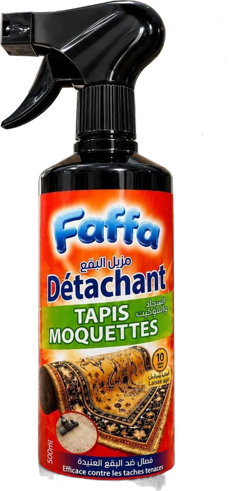
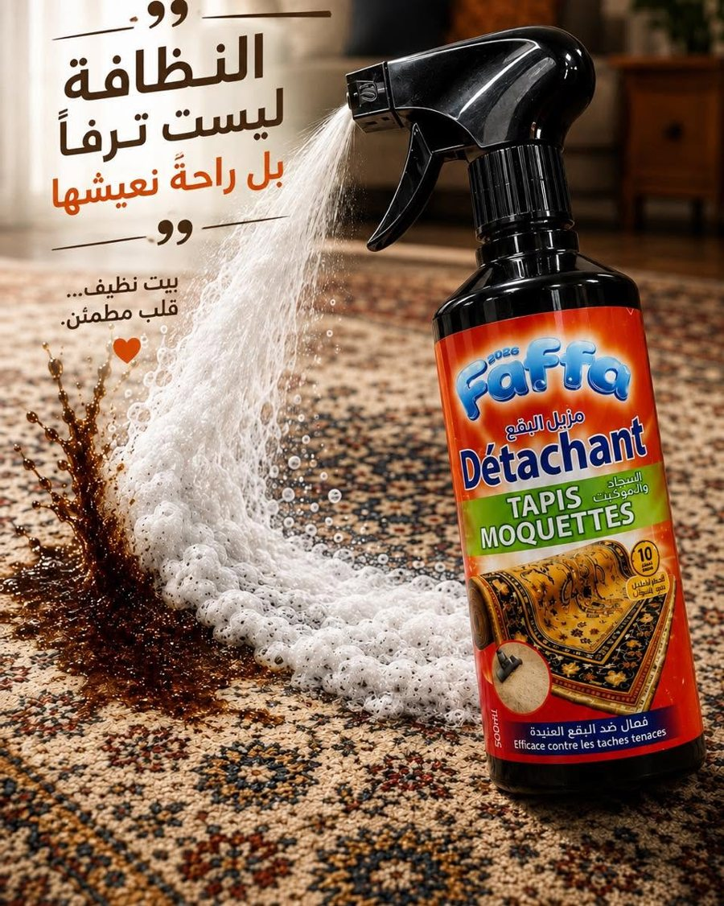
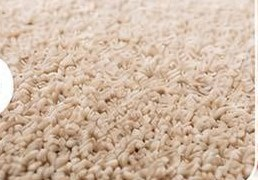
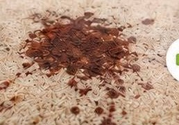
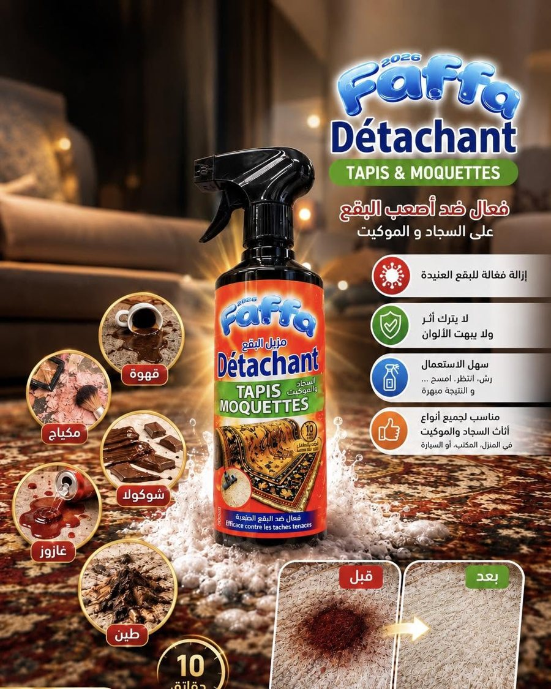
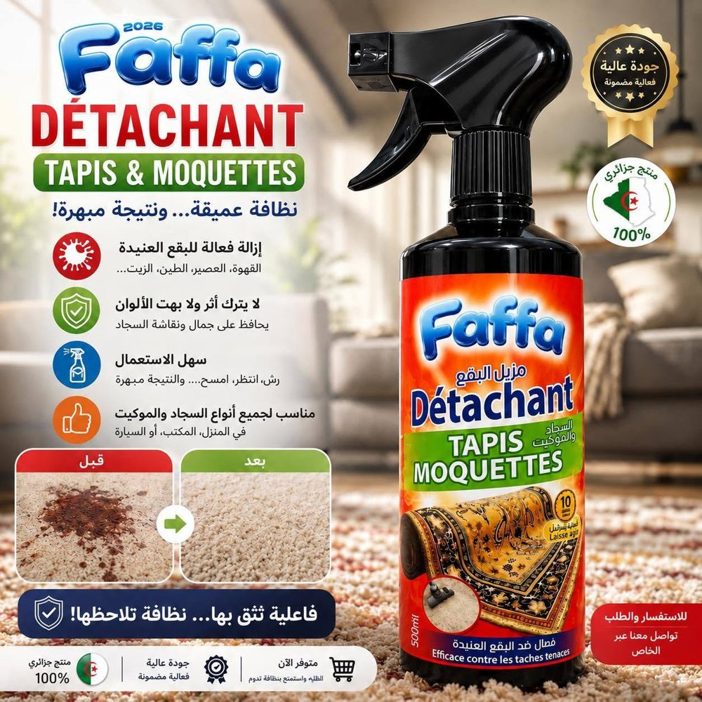
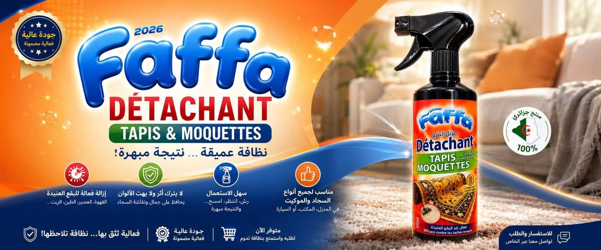

💥
Attaque les taches tenaces
Café, jus, terre, huile : même incrustées, elles décrochent.
نظافة عميقة... ونتيجة مبهرة!
Le détachant tapis & moquettes qui agit au cœur des fibres. Vous vaporisez, vous patientez, vous essuyez — c'est propre.

مزيل البقع للسجاد والموكيت — 500 مل
Café, jus, terre, huile : même incrustées, elles décrochent.
Il préserve la beauté, la douceur et les motifs de vos tapis.
Pas de machine, pas de rinçage compliqué. Juste un spray.
Tapis, moquettes, tissus — maison, bureau et voiture.
Survolez une tache… et laissez Faffa mousser.

En trois temps, sans effort.
Directement sur la tache, généreusement.
Environ 10 minutes : la mousse travaille au cœur des fibres.
Avec un chiffon propre et humide. Et voilà.
💡 Testez d'abord sur une petite zone cachée.
Une moquette tachée, un passage de Faffa. Faites glisser pour voir la différence.
فعالية تثق بها... نظافة تلاحظها!





Drogueries, supérettes, grossistes, pressings et sociétés de nettoyage : parlons tarifs, volumes et livraison partout en Algérie.
Devenir revendeurTapis, moquettes et textiles d'ameublement, à la maison, au bureau ou en voiture. Faites un essai sur une zone discrète.
Environ 10 minutes. Pour une tache très ancienne, renouvelez simplement l'application.
Non. Faffa est formulé pour ne laisser aucune trace et respecter les couleurs et la douceur des fibres.
Par téléphone au 0556 01 09 49 ou via le formulaire ci-dessous : on vous répond rapidement.
للاستفسار والطلب، تواصلوا معنا
0556 01 09 49Alger, Algérie · Facebook Faffa clean